Brukerguide for Cricut Maker og Cricut Design Space
I denne guiden skal du lære og bruke Cricut Maker og den medfølgende programvaren Cricut Design Space. Cricut Maker er en vinyl-kutter som lar deg skjære ut figurer og tekst som kan trykkes på flater eller tekstil. Denne guiden vil fokusere på hvordan vi tar et bilde og tekst, og skjærer ut konturer i Cricut maker. Denne guiden tar for seg fremgangsmåten til vinyl til bruk på flater og til tekstil. Programvaren Cricut Design Space ligger ferdig installert på noen av Folkeverkstedets datamaskiner.
Cricut Maker er en forholdsvis lett og trygg maskin å bruke. Det er likevel slik at Cricut Maker er en maskin med bevegelige mekaniske komponenter hvor det sitter et veldig skarpt knivblad på tuppen. For å unngå kutt og klemskader er det derfor viktig at du aldri tar inni maskinen når den er i drift. Maskinelle endringer skal alltid gjøres i samsvar med ansatte ved Folkeverkstedet. Fremmedlegemer skal ikke ligge i selve kutteområde i maskinen. Ved feil på maskinen skal man melde fra til ansatte i folkeverkstedet.
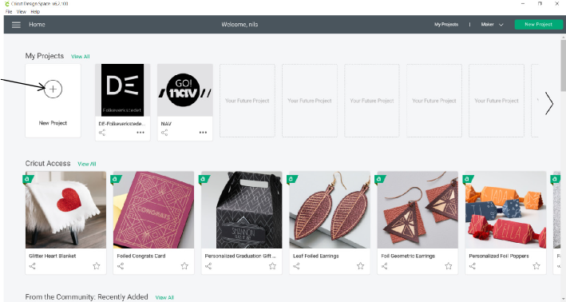
Trykk her for å starte et nytt prosjekt
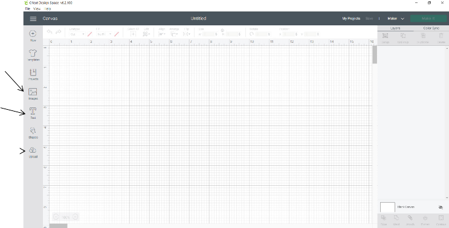
Cri cut har en database med masse bilder som kan brukes
Trykk her for å legge til tekst
For å legge
til bilder du har lastet
ned eller laget selv trykk her.
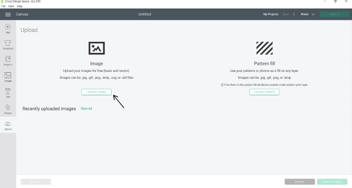
Trykk her for å laste opp bilder
Når du er ferdig med bildeopplastningen vil du automatisk bli transportert tilbake hit. Velg bilde under recently upload og trykk «Insert image»
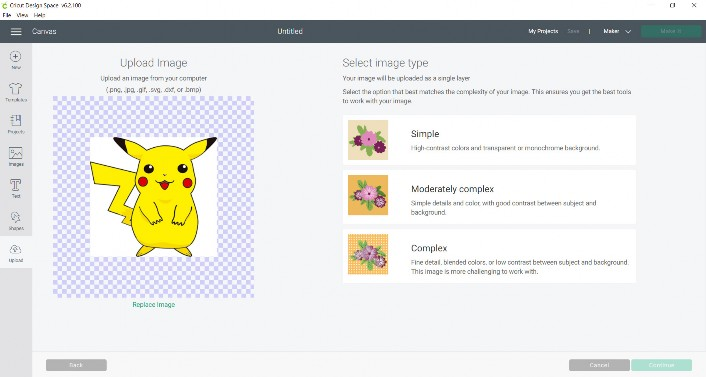
Her må du velge kvaliteten på bilde du skal ha. Her er det bare å prøve seg fram. Når du er klar for neste steg trykk «Continue» nederst til høyre
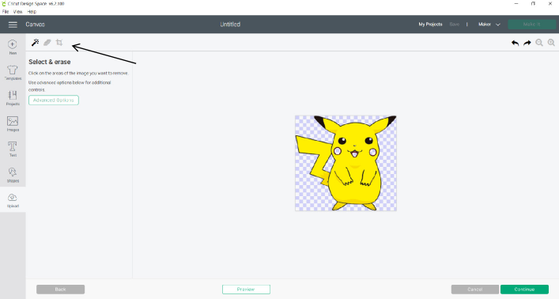
Ved å bruke funksjonene som pilen peker på kan du markere områder som blir fjernet på bilde. D
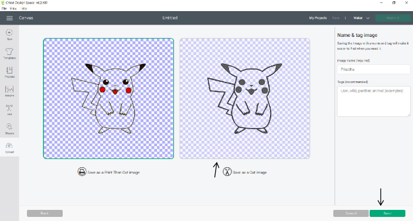
Når du er klar så trykker du på bilde som tilhører
«Save as a Cut Image»
Når du er fornøyd trykk
«save» for å lagre bilde.
Når vi skal skjære ut en kontur er det viktig at vi har på linjetype
«cut» . Her er det også mange andre funksjoner du kan bruke til å justere eller skalere figurene dine.
Når du er klar til å kutte, trykk på
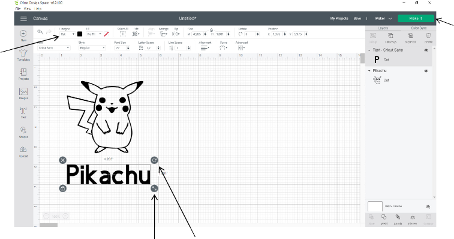
«make it»
Skalere Rotere
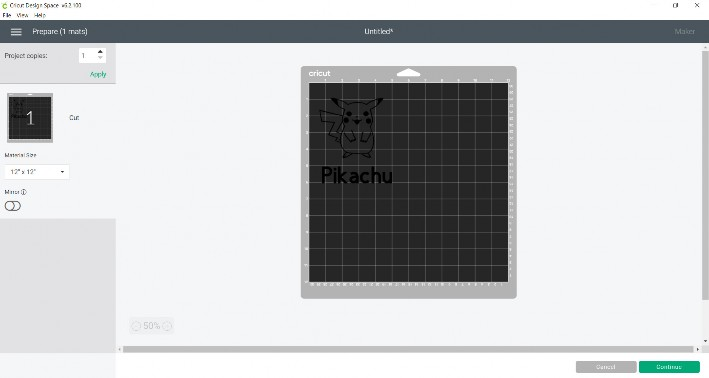
Her må du flytte figurene rundt på kuttematten slik at det samsvarer med hvor du skal kutte på den virkelige. Matten skal skal være i størrelse 12″ x 12″. Skal du trykke på tekstil se neste side før du går videre.
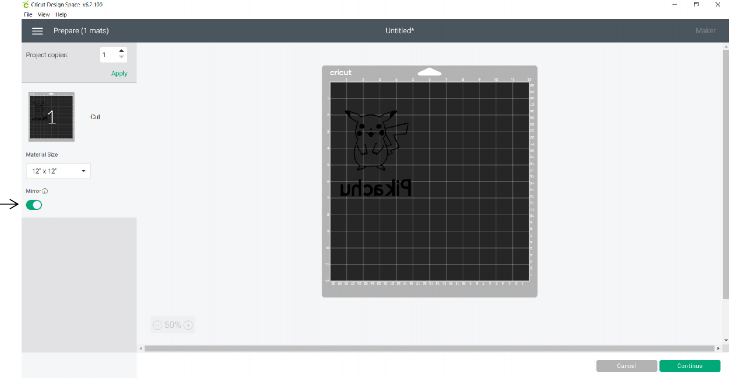
Når du skal trykke på tekstil er det viktig at du aktiverer
«Mirror». Hvis ikke blir vinylen speilvendt når den er festet på tekstil

Siste steg før du kan kutte er å sette materialet til vinyl. Filen sendes til maskinen automatisk. De neste stegene viser deg hvordan du bruker maskinen.
Vinyl du skal ha bruke på flater skal klistres fast på de blå kuttemattene med papirsiden ned.
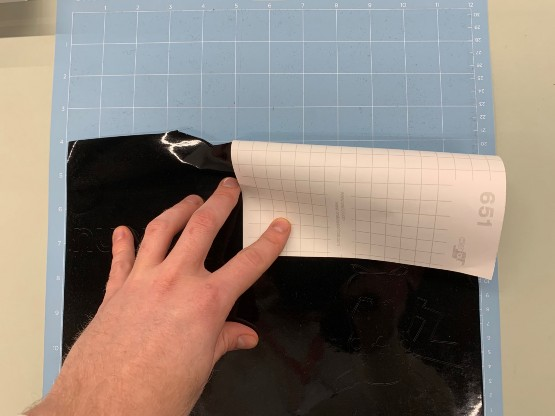
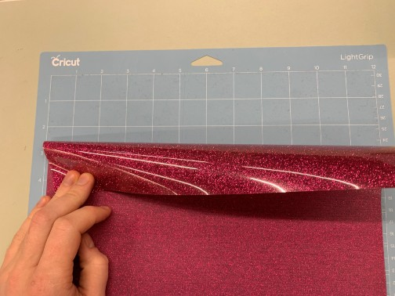
Vinyl du skal ha bruke på tekstil skal klistres fast på de blå kuttemattene med den blanke siden ned.
Før forsiktig kuttematten med vinylen inn i maskinen gjennom klammene som pilen peker på.
Trykk så på knappen med pilene for at maskinen fører kuttematten inn i kammeret. Husk at når du skal ta kuttematten ut igjen av maskinen, så bruker vi samme knapp for å reversere prosessen.
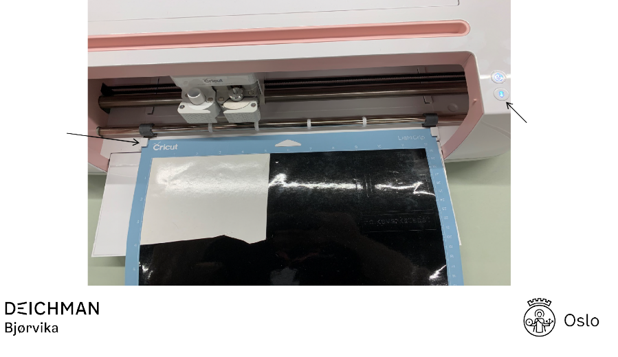
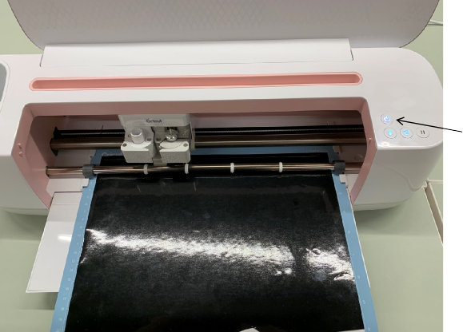
Når alt er klart så trykker du på start- knappen og venter til kuttingen er over.